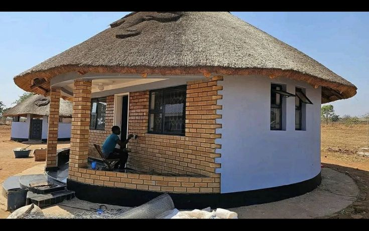

Bertoua – Cameroun
La conception architecturale à Bertoua, capitale régionale de l’Est du Cameroun, est fortement influencée par le climat équatorial humide, la disponibilité des matériaux locaux et les réalités socio-économiques de la région. L’architecture de la ville vise avant tout la fonctionnalité, le confort thermique et la durabilité des bâtiments. Adaptation au climat Bertoua connaît de fortes précipitations et des températures élevées. La conception architecturale privilégie donc : des toitures à forte pente pour l’évacuation rapide des eaux de pluie ; de larges avant-toits protégeant les façades ; une ventilation naturelle efficace grâce à des ouvertures bien réparties ; des espaces intérieurs aérés pour limiter l’accumulation de chaleur. Matériaux et techniques de construction Les matériaux utilisés sont majoritairement locaux et accessibles, notamment : blocs de ciment ; bois pour les charpentes et finitions ; tôles métalliques pour les couvertures ; briques de terre dans certaines constructions traditionnelles. Ces choix répondent à des critères de coût, de résistance à l’humidité et de facilité de mise en œuvre. Organisation spatiale et usages La conception des bâtiments à Bertoua prend en compte les usages domestiques et communautaires. Les habitations comportent souvent des cours intérieures et des espaces extérieurs couverts favorisant la vie sociale et la protection contre le climat. Évolution contemporaine Avec le développement urbain, Bertoua connaît l’émergence de bâtiments administratifs, commerciaux et résidentiels modernes. Les nouvelles conceptions intègrent progressivement des principes de construction durable et d’amélioration du confort environnemental.
Les structures architecturales à Bertoua, capitale régionale de l’Est du Cameroun, sont fortement influencées par le climat équatorial humide, la nature des sols et les ressources matérielles disponibles. La ville présente principalement des structures de faible à moyenne hauteur, adaptées aux conditions environnementales et aux capacités techniques locales. Les bâtiments résidentiels dominent le paysage urbain et reposent majoritairement sur des structures en béton armé, composées de fondations, poteaux, poutres et dalles. Ce système porteur est privilégié pour sa résistance à l’humidité et sa durabilité. Dans les quartiers périphériques, on retrouve également des structures en maçonnerie porteuse, utilisant des blocs de ciment ou des briques de terre stabilisée. Les fondations jouent un rôle essentiel dans la stabilité des bâtiments à Bertoua. Elles sont généralement renforcées pour résister à l’humidité du sol et prévenir les tassements. Les toitures, le plus souvent en charpente bois ou métallique recouverte de tôles, sont conçues avec une forte pente afin de faciliter l’évacuation des eaux pluviales. Les structures publiques et administratives adoptent des formes plus modernes, intégrant des normes de sécurité et de résistance accrues. Malgré les défis liés à l’urbanisation rapide et au respect des normes de construction, les structures architecturales à Bertoua évoluent progressivement vers des solutions plus sécurisées, fonctionnelles et durables, contribuant au développement urbain de la ville.
L’histoire de l’architecture à Bertoua, capitale régionale de l’Est du Cameroun, est étroitement liée à l’évolution sociale, culturelle et économique de la région. À l’origine, l’architecture était essentiellement vernaculaire, fondée sur l’utilisation de matériaux locaux tels que la terre, le bois et les feuilles de palmier. Ces constructions traditionnelles répondaient aux besoins climatiques et aux modes de vie des populations locales. La période coloniale a marqué une étape importante dans l’évolution architecturale de Bertoua. L’introduction de nouvelles techniques de construction et de matériaux comme le ciment, la tôle et le bois transformé a modifié les formes et les structures des bâtiments. Les édifices administratifs, les postes et les infrastructures de transport ont alors adopté des modèles plus standardisés et fonctionnels. Après l’indépendance du Cameroun, l’urbanisation progressive de Bertoua a favorisé l’émergence d’une architecture mixte, combinant influences traditionnelles et modernes. Les habitations résidentielles ont progressivement intégré des structures en béton armé, tandis que les bâtiments publics ont adopté des styles plus contemporains. Aujourd’hui, l’architecture à Bertoua continue d’évoluer sous l’effet de la croissance démographique et du développement urbain. Elle tend vers une meilleure prise en compte des normes de construction, du confort climatique et de la durabilité, tout en conservant certains éléments du patrimoine architectural local.